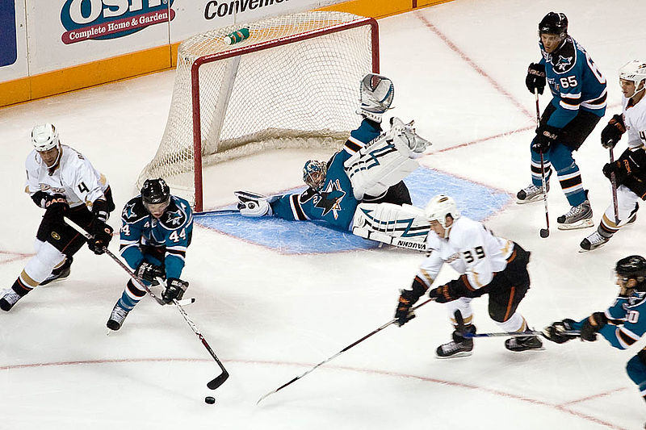

Ice hockey is a contact team sport played on ice, usually in a rink, in which two teams of skaters use their sticks to shoot a vulcanized rubber puck into their opponent's net to score points. Ice hockey teams usually consist of six players each: one goaltender, and five players who skate up and down the ice trying to take the puck and score a goal against the opposing team.
A fast-paced, physical sport, ice hockey is most popular in areas of North America (particularly Canada and the northern United States) and northern and eastern Europe. Ice hockey is the official national winter sport of Canada, where the game enjoys immense popularity. In North America, the National Hockey League (NHL) is the highest level for men's hockey and the most popular. The Kontinental Hockey League (KHL) is the highest league in Russia and much of Eastern Europe. The International Ice Hockey Federation (IIHF) is the formal governing body for international ice hockey. The IIHF manages international tournaments and maintains the IIHF World Ranking. Worldwide, there are ice hockey federations in 74 countries.[2]
